Moliyaviy monitoring xakatoni · FinTech / AIFinancial monitoring hackathon · FinTech / AI
VisionX — Financial Alert Intelligence
Moliyaviy signallar eskalatsiyasini machine learning yordamida bashorat qilish.Predicting financial alert escalation through machine learning.
Monitoring bo'limiga mijozlarning tranzaksiya tarixidan avtomatik signallar keladi. Mutaxassis har birini yo rad etadi, yo eskalatsiya qiladi. Maqsadimiz: yashirin test to'plamidagi har bir signal uchun eskalatsiya ehtimolini berish (baholash: ROC-AUC).Automatic alerts are raised from customers' transaction histories, and a specialist either dismisses or escalates each one. Our goal: give every alert in the hidden test set a probability of escalation (scored by ROC-AUC).
Yakuniy modelFinal modelLightGBMbutun train'da 5 seed bilan o'qitilganrefit on all training data with 5 seeds
Belgilar: yaratilgan / modeldaFeatures: built / used by model
626 / 463
Yashirin test ROC-AUCHidden test ROC-AUC
tashkilotchilar baholaydiscored by organizers
Barcha raqamlar bizning koddan olingan. 0.650 — train ma'lumotidagi validatsiya natijasi; yashirin test natijasi bizga ma'lum emas. Ma'lumotlar sintetik, haqiqiy mijozlar yo'q; saytda xom tranzaksiya yoki signal ID'lari e'lon qilinmagan. Yangilangan: 2026-09-25.Every number comes from our code. 0.650 is a validation score on the training data; the hidden test score is not known to us. The data are synthetic, with no real customers; no raw transactions or signal IDs are published here. Updated 2026-09-25.
2Ma'lumotlarDataset overview
Beshta fayl: signallar (train/test), ularning tranzaksiyalari (train/test) va namuna javob fayli. Har bir signalga uning mijozining signalgacha bo'lgan tranzaksiya tarixi biriktirilgan.Five files: alerts (train/test), their transactions (train/test) and a sample submission. Each alert comes with its customer's transaction history up to the alert.
Ko'rsatkichIndicator
QiymatValue
Train signallarTraining signals
14 000
Test signallarTest signals
6 000
Tarixiy tranzaksiyalar (train / test)Historical transactions (train / test)
6 987 663 / 3 027 575
Eskalatsiya ulushiEscalation rate
17.2%
Signalga tranzaksiya (o'rtacha / median)Transactions per alert (mean / median)
Tranzaksiya ustunlari: vaqt, kirim/chiqim, tur (karta, bank_otkazmasi, naqd, xalqaro) va miqdor_indeksi (standartlashtirilgan miqdor, so'm emas).Transaction columns: timestamp, kirim/chiqim (in/out), type (karta card, bank_otkazmasi transfer, naqd cash, xalqaro international) and miqdor_indeksi, a standardised size index rather than money.
Kelajak ma'lumotidan foydalanmaslik (leakage)No information from the future (leakage)
Signal sanasida vaqt yo'q, shuning uchun signalni o'sha kunning 00:00 deb oldik. Undan keyingi 3 934 (train) va 1 456 (test) tranzaksiya belgilarda ishlatilmaydi.The alert date has no time, so we treat the alert as 00:00 that day. The 3 934 (train) and 1 456 (test) transactions at or after that moment are never used.
signal_id modelga berilmaydi (ID tartibi va maqsad: AUC 0.498, bog'liqlik yo'q).signal_id is never a model input (ID order vs target: AUC 0.498, no relation).
Train va test'ni ajratishga uringan model (adversarial validation) AUC 0.502 oldi: test oddiy tasodifiy tanlanma.A model trying to tell train from test (adversarial validation) scored AUC 0.502: the test set is an ordinary random sample.
3Ma'lumotlar tahlili (EDA)Exploratory data analysis
Olti asosiy grafik; har birining tepasida bir-ikki jumlalik xulosa. Grafiklar interaktiv va faqat yig'ma raqamlardan chizilgan.Six key charts, each with a one or two-sentence takeaway above it. Charts are interactive and drawn from aggregated numbers only.
Maqsad taqsimoti va vaqt bo'yicha ulushTarget balance and rate over time
Signallarning 17.2% qismi eskalatsiya qilinadi: sinflar nomutanosib, shuning uchun aniqlik (accuracy) emas, ROC-AUC ishlatamiz.17.2% of alerts are escalated. The classes are imbalanced, which is why we score with ROC-AUC, not accuracy.
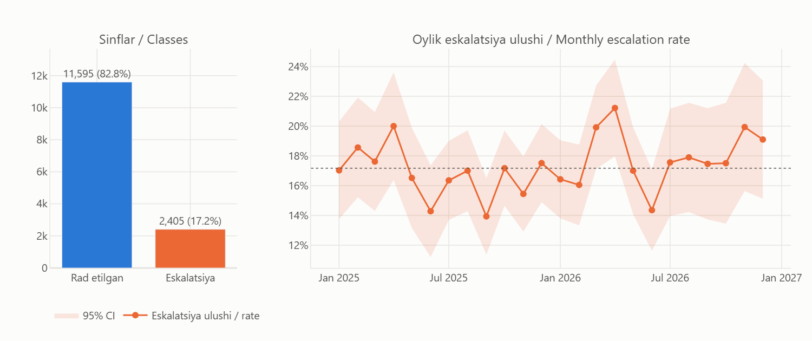
1-rasm.Fig. 1.Chapda: sinflar. O'ngda: oylik eskalatsiya ulushi, soya 95% ishonch oralig'i. Oylar orasidagi farq tasodifiy darajada (χ² p = 0.09), shuning uchun oy yoki hafta kunini belgi qilib qo'shmadik.Left: class counts. Right: monthly escalation rate with a 95% band. The month-to-month differences look like noise (chi-square p = 0.09), so we did not add month or weekday as features.
Kirim va chiqimIncoming vs outgoing
Kirim va chiqim nisbati ikkala sinfda deyarli bir xil: yo'nalishning o'zi eskalatsiyani tushuntirmaydi.Incoming vs outgoing balance is almost identical for both classes: direction alone does not explain escalation.
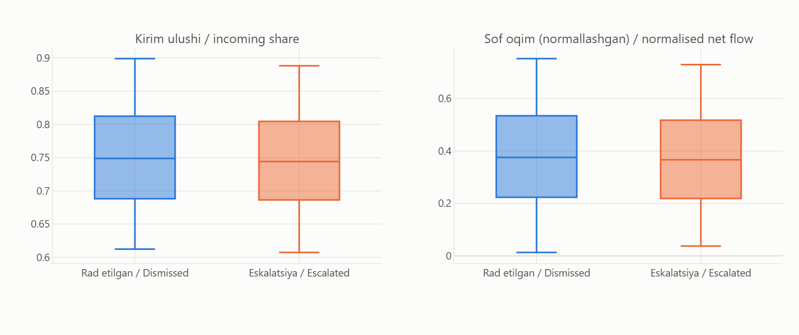
2-rasm.Fig. 2.Kirim ulushi va sof oqim ikkala sinfda deyarli bir xil. Kutgandik bu muhim bo'ladi, bo'lmadi.Incoming share and net flow look almost the same for both classes. We expected these to matter; they did not.
Tranzaksiya turlariTransaction types
Tranzaksiya turlari tarkibi ham bir xil (Cramér V = 0.0035). Muhimi turning o'zi emas, har bir tur ichidagi miqdorlar.The type mix is the same too (Cramér's V = 0.0035). What matters is not the type itself but the amounts within each type.
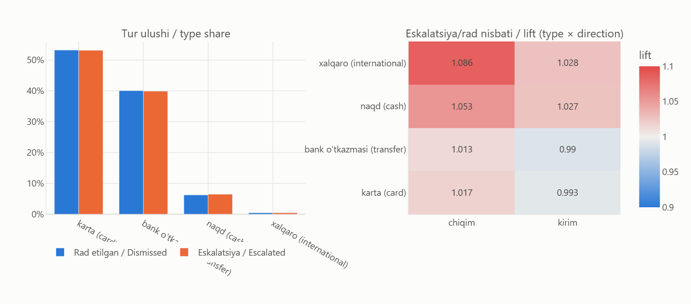
3-rasm.Fig. 3.Tur tarkibi ham ikkala sinfda bir xil. O'ngdagi jadval: eskalatsiya qilinganlardagi ulush / rad etilganlardagi ulush. Hammasi 1 atrofida.The type mix is the same for both classes too. Right panel: share among escalated divided by share among dismissed. Everything is close to 1.
Eng aniq farq: eskalatsiya qilinganlarda mayda bank o'tkazmalari ko'proq, yiriklari kamroq.The clearest difference: escalated alerts have more small and fewer large bank transfers.
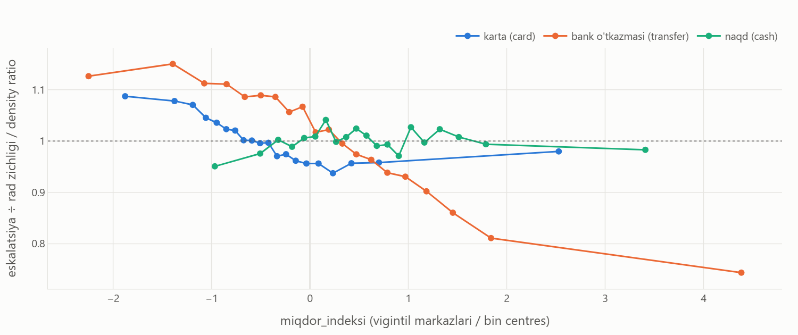
4-rasm.Fig. 4.Bizningcha eng qiziq grafik. Har bir miqdor oralig'ida eskalatsiya qilinganlar zichligini rad etilganlarnikiga bo'ldik. Bank o'tkazmalarida chiziq pastga tushadi: mayda o'tkazmalar eskalatsiyada ko'proq, yiriklari kamroq. Kartada ham shunga o'xshash, naqd pulda farq yo'q.Our favourite chart. For each amount bin we divided the escalated density by the dismissed one. For bank transfers the line slopes down: small transfers are over-represented among escalated alerts, large ones under-represented. Cards show a weaker version; cash shows nothing.
Kun soati va hafta kuniHour of day and weekday
Kun soati va hafta kuni bo'yicha farq yo'q, shuning uchun vaqt belgilarini modeldan chiqardik.No difference by hour or weekday, so we left time-of-day features out of the model.
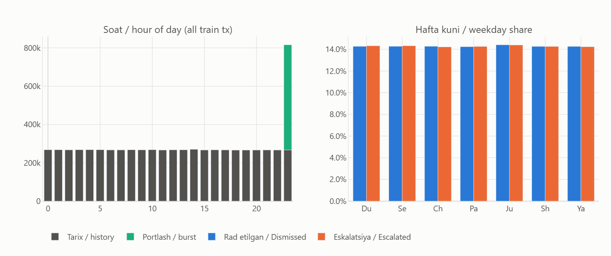
5-rasm.Fig. 5.Soatlar bo'yicha taqsimot deyarli tekis, bu sintetik ma'lumotga xos. 23-soatdagi ustun faqat 3 daqiqalik portlash hisobiga. Hafta kunlari ham ikkala sinfda bir xil.Transactions are spread almost evenly over the day, which is typical for synthetic data. The 23:00 bar is entirely the 3-minute burst. Weekdays look the same for both classes.
Signalgacha faollik (hodisa vaqti)Activity aligned to the alert (event time)
Eskalatsiya qilinganlar butun 180 kun davomida ~6% faolroq, lekin signal oldidan sakrash yo'q.Escalated customers are ~6% more active over the whole 180 days, but there is no spike before the alert.
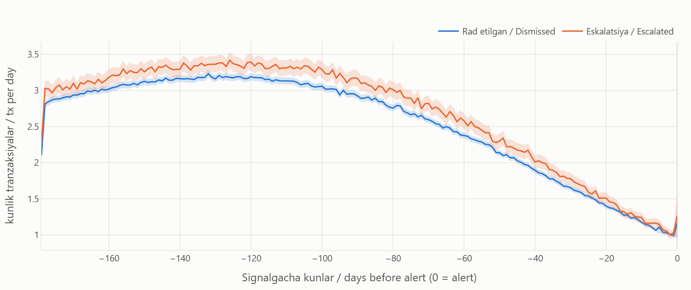
6-rasm.Fig. 6.Signalgacha har kuni o'rtacha nechta tranzaksiya. Eskalatsiya qilinganlar butun davr davomida ~6% faolroq, lekin egri chiziq shakli bir xil va signal oldidan sakrash yo'q. Qizig'i, faollik signalga yaqinlashgan sari kamayadi.Average transactions per day before the alert. Escalated customers are about 6% more active throughout, but the curves have the same shape and there is no spike before the alert. Oddly, activity drops as the alert gets closer.
Qo'shimcha grafiklar (6)More charts (6)
Tarix hajmi: eskalatsiya va rad etilganlarHistory size: escalated vs dismissed
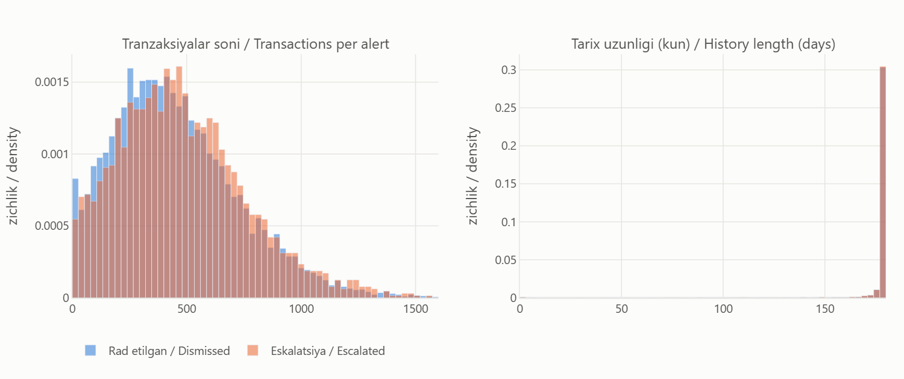
7-rasm.Fig. 7.Eskalatsiya qilinganlarda tranzaksiya biroz ko'proq (median 453 ta, rad etilganlarda 417). Farq bor, lekin kichik. Deyarli hamma tarix signaldan oldingi ~180 kunni qamraydi.Escalated alerts have slightly more transactions (median 453 vs 417). Real, but small. Nearly every history covers about 180 days before the alert.
Signal oldidan 3 daqiqalik 'portlash'The 3-minute pre-alert burst
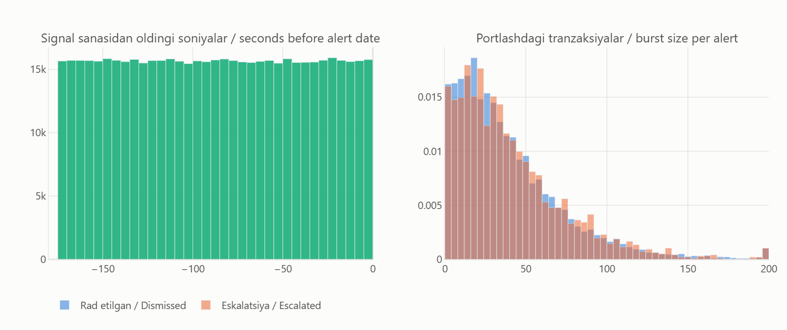
8-rasm.Fig. 8.Buni tasodifan topdik: barcha tranzaksiyalarning 7.9% qismi signal sanasidan oldingi kechada 23:57 va 23:59 orasida turibdi (signallarning 99% qismida, har birida median 31 ta). Bu generator artefakti bo'lsa kerak. Uni alohida belgilar sifatida hisobladik, CV biroz yaxshilandi (+0.007).We found this by accident: 7.9% of all transactions sit between 23:57 and 23:59 on the evening before the alert date (99% of alerts, median 31 each). Probably an artefact of the data generator. We summarise it as its own feature group, which helped CV a little (+0.007).
Tur bo'yicha miqdorAmount by type
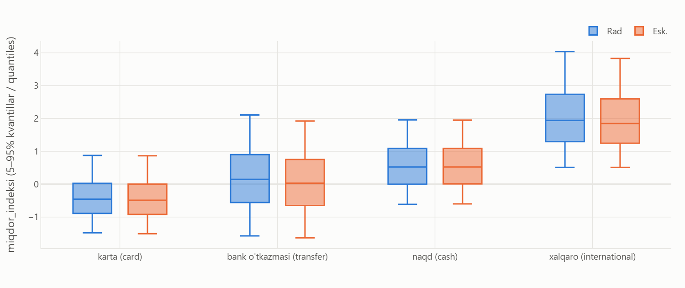
9-rasm.Fig. 9.Miqdor darajasi turga qarab juda farq qiladi (xalqaro > naqd > bank > karta). Shuning uchun miqdor statistikalarini har bir tur ichida alohida hisobladik.Amount level depends heavily on type (international > cash > transfer > card), so we compute amount statistics separately inside each type.
Signal oldidagi oynalarPre-alert windows vs baseline
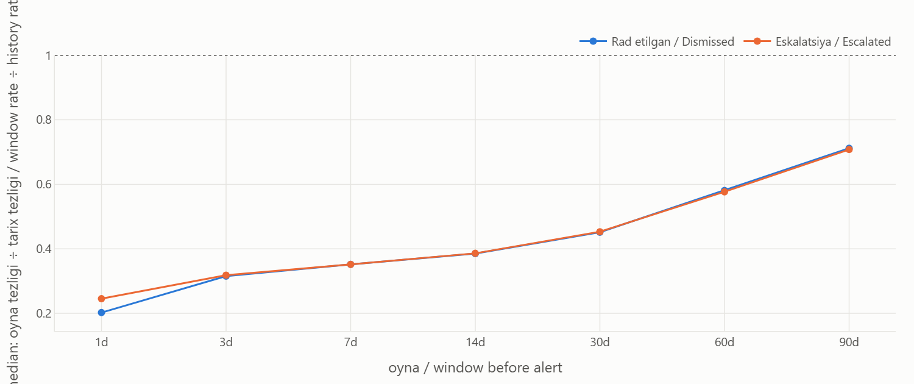
10-rasm.Fig. 10.Oxirgi 1 dan 90 kungacha bo'lgan faollik tarixiy o'rtachaga nisbatan. Ikkala sinf deyarli bir xil (eng katta Cliff δ = 0.021).Activity in the last 1 to 90 days relative to the whole history. Both classes look nearly the same (largest Cliff's delta = 0.021).
Belgilar kuchi (bir o'zgaruvchili)Feature strength (univariate)
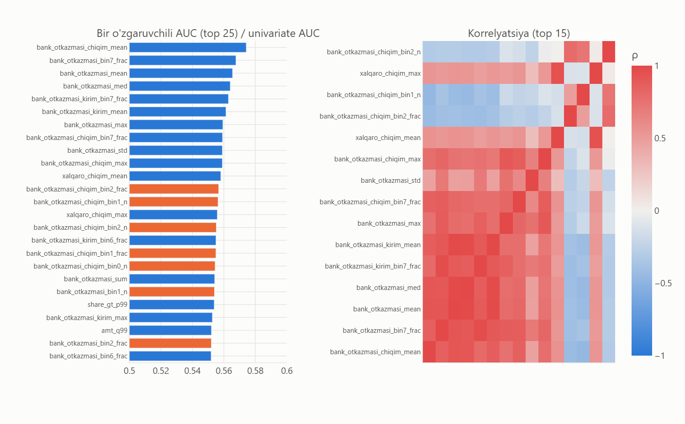
11-rasm.Fig. 11.Har bir belgining o'zi qanchalik ajratadi. Eng yaxshisi (bank_otkazmasi_chiqim_mean) ham atigi 0.574. To'q sariq = eskalatsiya bilan musbat bog'liq. O'ngda: kuchli belgilar bir-biri bilan qattiq korrelyatsiyalangan.How well each feature separates the classes on its own. Even the best one (bank_otkazmasi_chiqim_mean) only gets 0.574. Orange = positively related to escalation. Right: the strong features are heavily correlated with each other.
Train va test taqsimotiTrain vs test distributions
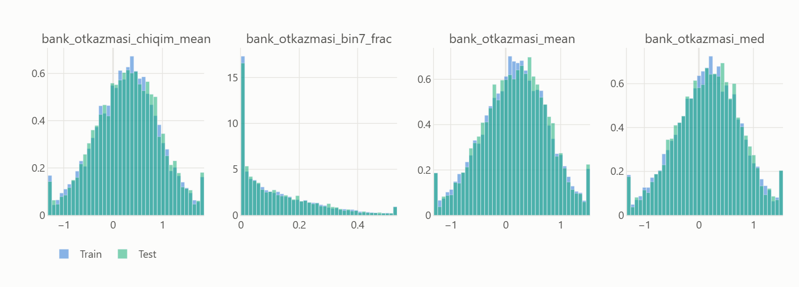
12-rasm.Fig. 12.Train va test taqsimotlari ustma-ust tushadi (eng katta KS = 0.022).Train and test distributions overlap (largest KS = 0.022).
4Asosiy xulosalarKey insights
Taxmin emas: har bir xulosa statistik test bilan tekshirilgan.Not guesses: every point is backed by a statistical test.
Qaysi xatti-harakat eskalatsiya bilan eng ko'p bog'liq?Which behaviour is most linked to escalation?Mayda bank o'tkazmalari ko'p va yiriklari kam bo'lishi. Ma'lumotdagi eng aniq signal shu.Many small and few large bank transfers. This is the clearest signal in the data.median bank-transfer mean 0.06 vs 0.21, Cliff's δ = -0.131, Mann-Whitney p = 7e-24.
Eskalatsiya qilinganlar faolroqmi?Are escalated customers more active?Ha, lekin biroz: ~6% ko'proq tranzaksiya, va bu butun 180 kun davomida saqlanadi.Yes, slightly: ~6% more transactions, and it holds over the whole 180 days.volume ratio 1.062; median 453 vs 417 transactions; Cliff's δ = 0.062.
Signal oldidan faollik o'zgaradimi?Does activity change right before the alert?Yo'q. Oxirgi 1–90 kunlik oynalarda ikkala sinf bir xil; birinchi gipotezamiz tasdiqlanmadi.No. In 1 to 90-day windows both classes look the same; our first hypothesis did not hold.largest |Cliff's δ| over 1 to 90-day windows = 0.021.
Tur, yo'nalish yoki vaqt muhimmi?Do type, direction or time of day matter?Alohida olganda deyarli yo'q. Tungi va dam olish kuni operatsiyalari ham farq qilmaydi.On their own, hardly. Night-time and weekend activity make no difference either.type mix Cramér's V = 0.0035; time-pattern features ΔAUC -0.0003 in ablation.
5Belgilar yaratishFeature engineering
Tranzaksiyalarni qanday qilib bashorat qiluvchi belgilarga aylantirdik? Asosiy g'oya: bitta signalga tegishli yuzlab tranzaksiyalar bitta qatorga umumlashtiriladi.How did we turn transactions into predictive features? The key idea: the hundreds of transactions behind one alert are summarised into a single row.
Tarixiy tranzaksiyalarHistorical transactionsfaqat signal sanasidan oldingionly before the alert date
Signal bo'yicha agregatsiyaAggregation per alert~461 qator → 1 qator~461 rows → 1 row
Xulq-atvor belgilariBehavioural features626 ta626 features
ML modelML modelLightGBM
Eskalatsiya ehtimoliEscalation probability0 … 1
Yakuniy modelga qaysi belgilar kirdi?Which features does the final model use?
626 ta belgi yaratildi, hammasi modelga beriladi; yakuniy LightGBM ulardan 463 tasini haqiqatda ishlatadi (gain > 0), qolgan 163 tasi hech bir bo'linishda tanlanmagan. Eng muhim 20 belgi umumiy gain'ning 35%, eng muhim 100 tasi 70% qismini beradi (15-rasm). Vaqt naqshlari va pass-through guruhlari CV'ni yaxshilamagani uchun umuman yaratilmaydi.We build 626 features and pass all of them to the model; the final LightGBM actually uses 463 (gain > 0), while the other 163 are never picked for a split. The top 20 features carry 35% of the total gain and the top 100 carry 70% (Fig. 15). Time-pattern and pass-through groups did not improve CV, so they are not built at all.
Belgi guruhiFeature group
YaratilganBuilt
Modelda ishlatilganUsed by model
Gain ulushiShare of gain
Tur va yo'nalish bo'yicha agregatlarAggregates by type and direction
130
118
46%
Miqdor gistogrammasiAmount histogram
192
128
28%
1–90 kunlik oynalar1 to 90-day windows
167
119
11%
3 daqiqalik portlash3-minute burst
51
40
9%
Oxirgi 20 tranzaksiyaLast 20 transactions
86
58
7%
JamiTotal
626
463
100%
Har bir belgi guruhini o'chirib, CV qancha tushishini o'lchadik (musbat = guruh foydali). Foyda bermagan guruhlar olib tashlandi.We switched off one feature group at a time and measured the CV drop (positive = the group helps). Groups that did not help were dropped.
Nimani ko'rdikWhat we saw
BelgilarFeatures
ΔAUC
Miqdor turga qarab farq qiladi; bank o'tkazmalari eng kuchliAmount depends on type; bank transfers matter most
<type>_mean/std/min/max, <type>_<dir>_*
+0.0262
Mayda va yirik o'tkazmalar nisbatiShare of small vs large transfers
<type>_<dir>_bin0..7_frac
+0.0014
Oxirgi tranzaksiyalarThe last few transactions
last0..19_amt/age/in/type
+0.0060
3 daqiqalik portlashThe 3-minute burst
b_*, br_* (burst vs history)
+0.0068
Oxirgi kunlardagi faollikRecent activity
w1..w90_*, accel_*
+0.0021
Tungi / dam olish kunlari, oraliqlar (olib tashlandi)Night / weekend, gaps (dropped)
hour/weekday shares, gap_*
-0.0003
Pass-through: kirdi, tez chiqdi (olib tashlandi)Pass-through: money in, quickly out (dropped)
pt_*
-0.0019
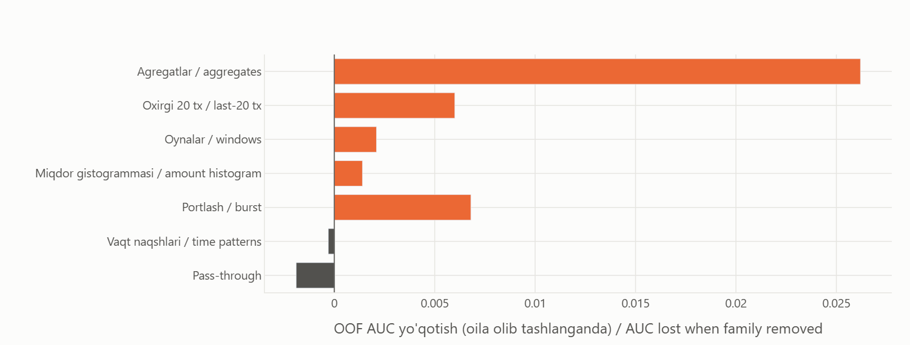
13-rasm.Fig. 13.Guruhni olib tashlaganda CV qancha tushadi (LightGBM, 5×2 CV). Agregatlar asosiy ishni qiladi. Vaqt naqshlari va pass-through foyda bermadi, ularni yakuniy modeldan olib tashladik.How much CV drops when a group is removed (LightGBM, 5×2 CV). Aggregates do most of the work. Time patterns and pass-through did not help, so we dropped them from the final model.
6Machine learning modelMachine learning model
Logistic regression — baseline (oddiy chiziqli model)baseline (a simple linear model)
LightGBM — gradient boosting nomzodi; validatsiyada eng yaxshisi, yakuniy modelgradient-boosting candidate; best in validation, the final model
ROC-AUC — baholash ko'rsatkichievaluation metric
Validatsiya qanday qurilganHow validation is set up
Bo'lish signal darajasida: takroriy stratifikatsiyalangan 5-fold (3 marta, seed 42). Tranzaksiyalar alohida bo'linmaydi; har bir signalning belgilari faqat o'z tranzaksiyalaridan hisoblanadi.The split is at alert level: repeated stratified 5-fold (3 repeats, seed 42). Transactions are never split on their own; each alert's features come only from its own transactions.
Imputatsiya, masshtablash va erta to'xtatish faqat o'quv fold ichida. Giperparametrlar Optuna bilan topilib, qotirilgan.Imputation, scaling and early stopping only ever see the training fold. Hyper-parameters were tuned with Optuna and then frozen.
Test sanalari train bilan bir xil oraliqda va adversarial AUC ≈ 0.5, shuning uchun tasodifiy (vaqt bo'yicha emas) bo'lish o'rinli.Test dates cover the same range as train and adversarial AUC ≈ 0.5, so a random (not time-based) split is appropriate.
Qaysi model tanlandi va nima uchunWhich model was chosen, and why
Modellarni aralashtirib ko'rdik (OOF 0.6501). Lekin og'irliklarni 4 foldda topib, 5-foldda tekshirsak, blend 0.6499, eng yaxshi bitta model esa 0.6500. Farq yo'q darajada, shuning uchun sodda variantni tanladik: LightGBM, butun train'da 5 xil seed bilan o'qitilgan.We tried blending the models (OOF 0.6501). But when the weights are fitted on 4 folds and checked on the 5th, the blend gets 0.6499 and the best single model 0.6500. That is no real difference, so we went with the simpler option: LightGBM, trained on all of train with 5 different seeds.
Sayt, CSV va notebook bir-biriga mos. Bu yerda ko'rsatilgan model (LightGBM) yakuniy team_040817EA.csv faylini yaratgan model bilan bir xil (SHA256 96e74eefe3d9…). Notebook xuddi shu faylni qayta yaratadi, va bu avtomatik tekshiriladi (farq ≤ 1e-6).Website, CSV and notebook agree. The model shown here (LightGBM) is the one that produced the final team_040817EA.csv (SHA256 96e74eefe3d9…). The notebook regenerates the same file, and this is checked automatically (difference ≤ 1e-6).
7Model natijalariModel performance
Bu bo'limdagi barcha raqamlar — validatsiya natijalari. Ular 14 000 ta belgilangan train signalida out-of-fold (OOF) usulida hisoblangan: har bir signalni u o'qitishda qatnashmagan model baholaydi. Yashirin test (6 000 signal) javoblarini biz ko'rmaganmiz; uning ROC-AUC natijasini faqat tashkilotchilar hisoblaydi, va u validatsiyadan farq qilishi mumkin.Every number in this section is a validation result. They are computed out-of-fold (OOF) on the 14 000 labelled training alerts: each alert is scored by a model that did not train on it. We never see the hidden test labels (6 000 alerts); its ROC-AUC is computed only by the organizers and may differ from validation.
14-rasm.Fig. 14.Bir xil CV bo'linishlarida to'rt model. LightGBM va XGBoost deyarli teng; logistik regressiya (baseline) ancha orqada, ya'ni signal chiziqli emas.Four models on the same CV splits. LightGBM and XGBoost are practically tied; logistic regression (the baseline) is well behind, so the signal is not linear.
Eng muhim 20 belgi (LightGBM gain)Top 20 features (LightGBM gain)
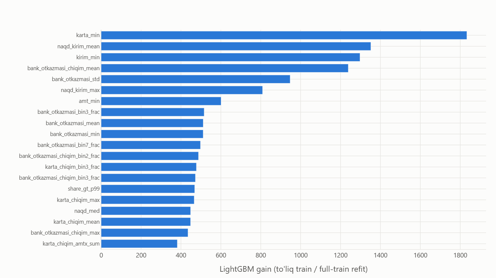
15-rasm.Fig. 15.Yakuniy LightGBM'da eng ko'p ishlatilgan belgilar. Ko'pchiligi tur bo'yicha miqdor statistikasi: karta minimumi, naqd kirim o'rtachasi, bank o'tkazmalari o'rtachasi va tarqoqligi.Features the final LightGBM leans on most. Mostly per-type amount statistics: card minimum, cash-in mean, bank-transfer mean and spread.
8XulosaConclusion
1. Qanday xatti-harakatlar eskalatsiya bilan bog'liq?1. Which financial behaviours are linked to escalation?
Eskalatsiya qilingan mijozlarda mayda bank o'tkazmalari ko'proq, yiriklari kamroq, va ular umuman biroz faolroq (~6%). Kirim/chiqim nisbati, tranzaksiya turlari, tungi va dam olish kuni operatsiyalari, signal oldidan faollik sakrashi esa farq qilmaydi.Escalated customers make more small and fewer large bank transfers, and are somewhat more active overall (~6%). The in/out balance, the type mix, night and weekend activity and any pre-alert spike make no difference.
2. Model ularni qanday tahlil qiladi?2. How does our model use them?
Har bir signal tarixi 626 ta belgiga umumlashtiriladi (asosan har bir tur va yo'nalish ichidagi miqdor statistikasi). LightGBM bu kuchsiz signallarni birlashtiradi: eng yaxshi bitta belgi ~0.57 AUC beradi, model esa 0.650.Each alert's history is summarised into 626 features (mostly amount statistics within each type and direction). LightGBM combines these weak signals: the best single feature gets ~0.57 AUC, the model 0.650.
3. Qanday cheklovlar bor?3. What are the limitations?
Signal kuchsiz: 0.650 AUC foydali, lekin mukammal emas; model mutaxassis o'rnini emas, navbatni saralashni qo'llab-quvvatlaydi.The signal is weak: 0.650 AUC is useful but far from perfect; the model supports prioritising the review queue rather than replacing the specialist.
Kontragent va mijoz ID'si yo'q, shuning uchun graf belgilari yo'q. Miqdor standartlashtirilgan indeks.No counterparties or customer IDs, so no graph features. Amounts are a standardised index.
Signal oldidagi 3 daqiqalik "portlash" (8-rasm, qo'shimcha grafiklarda) generator artefakti bo'lsa kerak.The 3-minute burst before each alert (Fig. 8, under "More charts") is most likely a data-generator artefact.
Ma'lumotlar sintetik; haqiqiy bankda natija boshqacha bo'lishi mumkin.The data are synthetic; results on real bank data may differ.
Ishlamagan g'oyalar (9)Ideas that did not work (9)
G'oyaIdea
OOF AUC
GRU over the last 1024 transactions (idea from AMEX 1st place)
0.5679
Transaction-level model, then averaged per alert
0.555
Naive Bayes on binned features (Santander trick)
0.5600
LightGBM with 2 leaves (Santander)
0.6374
LightGBM DART (AMEX)
0.6071
Direction/type transitions, velocity, deltas
0.6420
Recent vs earlier behaviour shift
0.6396
Removing the weekly trend from amounts
0.6353
Alert date as a feature
0.6478
Qayta ishga tushirishReproducibility
uv sync
uv run python tasks.py all # audit → features → eda → train → predict → notebook → site
Yoki bitta mustaqil notebook: notebooks/team_040817EA_reproducible.ipynb (faqat 5 ta berilgan faylni o'qiydi, seed'lar qotirilgan).Or one self-contained notebook: notebooks/team_040817EA_reproducible.ipynb (reads only the 5 provided files, fixed seeds).